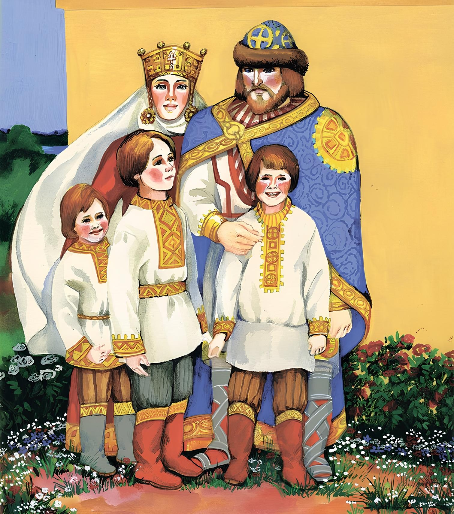

Белая уточка

Один князь женился на прекрасной княжне и не успел еще на нее наглядеться, не успел с нею наговориться, не успел ее наслушаться, а уж надо было им расставаться, надо было ему ехать в дальний путь, покидать жену на чужих руках. Что делать! Говорят, век обнявшись не просидеть.
Много плакала княгиня, много князь ее уговаривал, заповедовал не покидать высока терема, не ходить на беседу, с дурными людьми не ватажиться, худых речей не слушаться. Княгиня обещала все исполнить.
Князь уехал, она заперлась в своем покое и не выходит.
Долго ли, коротко ли, пришла к ней женщина, казалось — такая простая, сердечная!
— Что,- говорит,- ты скучаешь? Хоть бы на божий свет поглядела, хоть бы по саду прошлась, тоску размыкала.
Долго княгиня отговаривалась, не хотела, наконец подумала: по саду походить не беда,- и пошла.
В саду разливалась ключевая хрустальная вода.
— Что,- говорит женщина,- день такой жаркий, солнце палит, а водица студеная так и плещет, не искупаться ли нам здесь?
— Нет, нет, не хочу!- А там подумала: ведь искупаться не беда!
Скинула сарафанчик и прыгнула в воду. Только окунулась, женщина ударила ее по спине.
— Плыви ты,- говорит,- белою уточкой!
И поплыла княгиня белою уточкой.
Ведьма тотчас нарядилась в ее платье, убралась, намалевалась и села ожидать князя.
Только щенок вякнул, колокольчик звякнул, она уж бежит навстречу, бросилась к князю, целует, милует. Он обрадовался, сам руки протянул и не распознал ее.
А белая уточка нанесла яичек, вывела деточек: двух хороших, а третьего — заморышка; и деточки ее вышли — ребяточки.
Она их вырастила, стали они по реченьке ходить, злату рыбку ловить, лоскутики собирать, кафтанчики сшивать, да выскакивать на бережок, да поглядывать на лужок.
— Ох, не ходите туда, дети!- говорила мать.
Дети не слушали; нынче поиграют на травке, завтра побегают по муравке, дальше, дальше — и забрались на княжий двор.
Ведьма чутьем их узнала, зубами заскрипела. Вот она позвала деточек, накормила-напоила и спать уложила, а там велела разложить огня, навесить котлы, наточить ножи.
Легли два братца и заснули; а заморышка, чтоб не застудить, приказала им мать в пазушке носить,- заморышек-то и не спит, все слышит, все видит.
Ночью пришла ведьма под дверь и спрашивает:
— Спите вы, детки, иль нет? Заморышек отвечает:
— Мы спим — не спим, думу думаем, что хотят нас всех порезати: огни кладут калиновые, котлы высят кипучие, ножи точат булатные!
— Не спят!
Ведьма ушла, походила-походила, опять под дверь.
— Спите, детки, или нет? Заморышек опять говорит то же:
— Мы спим — не спим, думу думаем, что хотят нас всех порезати: огни кладут калиновые, котлы высят кипучие, ножи точат булатные!
“Что же это все один голос?”- подумала ведьма, отворила потихоньку дверь, видит: оба брата спят крепким сном, тотчас обвела их мертвой рукой — и они померли.
Поутру белая уточка зовет деток: детки не идут. Зачуяло ее сердце, встрепенулась она и полетела на княжий двор.
На княжьем дворе, белы как платочки, холодны как пласточки, лежали братцы рядышком.
Кинулась она к ним, бросилась, крылышки распустила, деточек обхватила и материнским голосом завопила:
— Кря, кря, мои деточки!
Кря, кря, голубяточки!
Я нуждой вас выхаживала,
Я слезой вас выпаивала,
Темну ночь недосыпала,
Сладок кус недоедала!
— Жена, слышишь, небывалое? Утка приговаривает.
— Это тебе чудится! Велите утку со двора прогнать!
Ее прогонят, она облетит да опять к деткам:
— Кря, кря, мои деточки!
Кря, кря, голубяточки!
Погубила вас ведьма старая,
Ведьма старая, змея лютая,
Змея лютая, подколодная;
Отняла у нас отца родного,
Отца родного — моего мужа,
Потопила нас в быстрой реченьке,
Обратила нас в белых уточек,
А сама живет-величается!
“Эге!” — подумал князь и закричал:
— Поймайте мне белую уточку! Бросились все, а белая уточка летает и никому не дается; выбежал князь сам, она к нему на руки пала. Взял он ее за крылышко и говорит:
— Стань белая береза у меня позади, а красная девица впереди!
Белая береза вытянулась у него позади, а красная девица стала впереди, и в красной девице князь узнал свою молодую княгиню.
Тотчас поймали сороку, подвязали ей два пузырька, велели в один набрать воды живящей, в другой — говорящей. Сорока слетала, принесла воды. Сбрызнули деток живящею водою — они встрепенулись, сбрызнули говорящею — они заговорили.
И стала у князя целая семья, и стали все жить-поживать, добро наживать, худо забывать.
А ведьму привязали к лошадиному хвосту, размыкали по полю: где оторвалась нога — там стала кочерга; где рука — там грабли; где голова — там куст да колода. Налетели птицы — мясо поклевали, поднялися ветры — кости разметали, и не осталось от ней ни следа, ни памяти!